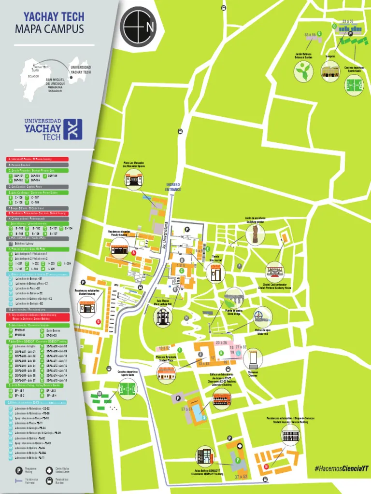
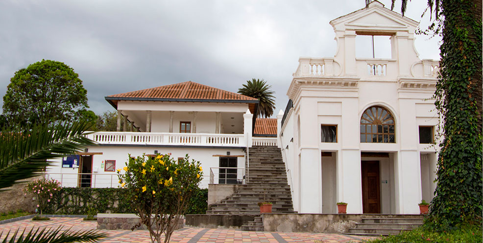
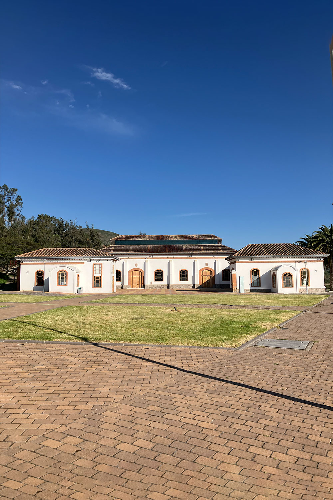
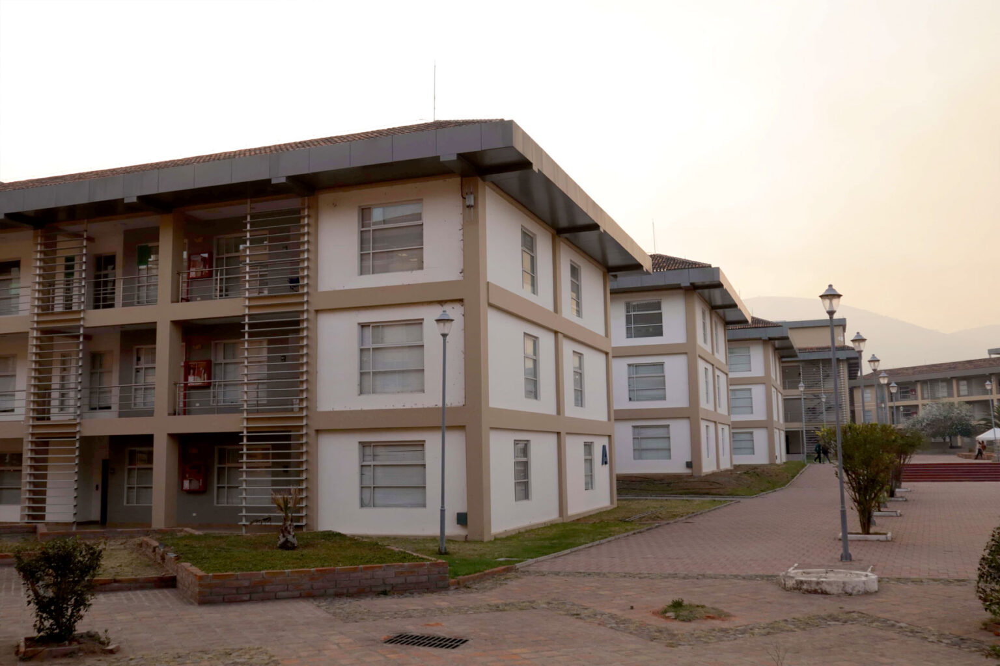

Yachay Tech University is located in San Miguel de
Urcuquí, in the province of Imbabura, about two hours
north of Quito. The campus was built on the grounds of a colonial
hacienda, so it mixes restored heritage buildings with new
laboratories, and everything is connected by gardens and walking
paths instead of corridors.
This page shows where I actually spend my week. You can compare it
with my weekly schedule to see which
class happens in each building.
The campus seen from the upper gardens
The official campus map
The university publishes a numbered map of the whole campus. The
entrance is on Av. Universidad, on the west
side. The academic buildings run along the southern half, while
student housing, the sports fields and the botanical garden occupy
the north.

Mapa del campus – Yachay Tech University
Landmarks that appear on the map:
Aula Magna – main lecture hall
Plaza del Estudiante – student plaza
Puente de piedra – the old stone bridge
Molino de agua – the restored water mill
Jardín Botánico – botanical garden
Jardín de esculturas – sculpture garden
Academic buildings
These are the two buildings where all my classes take place this
semester. Both appear on the map above, in the southern half of the
campus.
Edificio SENESCYT
The main classroom building, marked on the map as
Aulas Edificio SENESCYT. Three of my
weekly sessions happen here, spread between the ground floor and
the upper floors.
Edificio SENESCYT – Yachay Tech University
Rooms I use in this building:
PB-A01 – Web Programming and Stochastic Processes
AT-A07 – Stochastic Processes, Friday session
P1-A09 – Physics II, Wednesday
P2-A17 – Physics II, Monday
Heritage buildings
The campus grew around the old Hacienda San
José. Several of its original buildings were restored
and are still in use today.
Sala Capitular

Sala Capitular – chapter house
One of the restored colonial buildings, used for ceremonies and
official events. Its white facade and arched entrance are the
image most people associate with the university.
Residencias Patrimoniales
Residencias Patrimoniales
Student housing inside the restored hacienda buildings, closer
to the centre of the campus than the newer blocks.
Where students live and study
Biblioteca

Biblioteca – the library
Where most of the studying actually happens, especially during
exam weeks. It appears on the map as
Biblioteca / Library.
Residencias – Bloques

Residencias estudiantiles – blocks
The newer student housing blocks, in the northern part of the
campus next to the sports fields.
Residencias Multifamiliares
Residencias Multifamiliares
Larger residence buildings, used mainly by profesors, administrative staff, and
students who live on campus.